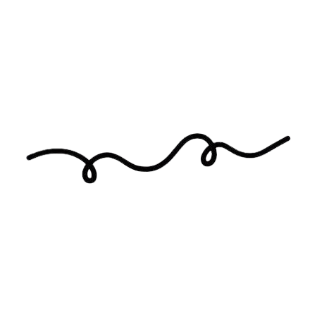
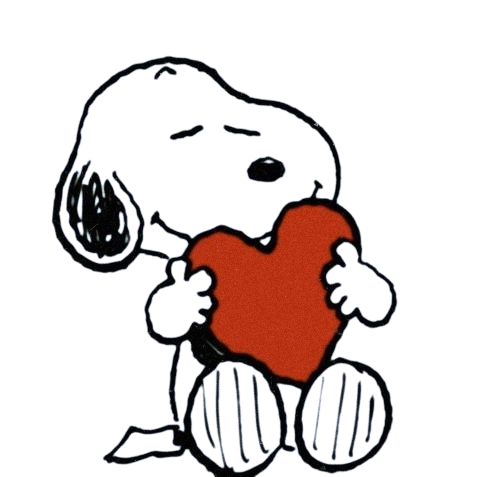

Para la mujer más hermosa
14 de febrero de 2025
Posiblemente no hablemos mucho o no te escriba tanto como antes, pero en todo este tiempo no he podido dejar de pensarte.
De repente te he molestado escribiéndote tonterías, pero quiero que sepas que te has vuelto alguien interesante para mí en todo este tiempo.
No sé cuál será tu opinión sobre mí. Lo más probable es que pienses que soy fumón y medio loco, pero esto lo hago para que sepas lo que me importas. No será mucho o algo que tenga valor, pero espero que te guste. Además, aunque no pueda pedirte que seas mi San Valentín, quería darte esto como regalo. Intenté hacerlo más bonito, pero no pude. Pido perdón.
Cuando vuelvas, saldremos donde tú quieras, pero antes podríamos ir a comer los kekitos de donde tú me llevaste. No recuerdo dónde era, pero estaban muy ricos.
Que la distancia no haga olvidar que te quiero y que el silencio no te haga pensar que me olvidé de ti ❤️
Florcitas para ti, te las debo para cuando vuelvas.


Con cariño❤️,
